|
Introducción |
|
El objetivo de este manual es presentar al usuario el Sistema BANKBU de la compañía OpenCard SAS Su contenido le permitirá aprender y entender cómo interactuar con el Sistema, cómo navegar a través de él por las diferentes opciones, sus componentes, el propósito de cada uno de los formularios desplegados y una descripción de la información allí contenida. |
|
Ayuda |
El contenido de esta ayuda puede ser consultado oprimiendo el botón , que se encuentra en la parte superior del área de trabajo de la pantalla. |
|
Cada uno de los roles y las opciones que los conforman se explican de manera individual. Dentro de cada rol se describe el propósito u objetivo global del mismo y se esquematiza su contenido, pormenorizando después cada una de sus secciones en las cuales se explican los formularios que lo componen, su finalidad dentro del contexto del rol, las características de cada uno de los campos desplegados y las diferentes opciones disponibles. En esta sección se explican en detalle los siguientes tópicos: Cómo ingresar al sistema | Ventana principal del sistema | Navegación | |

|
|
Cómo ingresar al Sistema: Se abre una sesión del navegador (preferiblemente internet explorer v.6.0 o superior) y se ingresa la dirección de acceso configurada al momento de instalar la aplicación. |
|
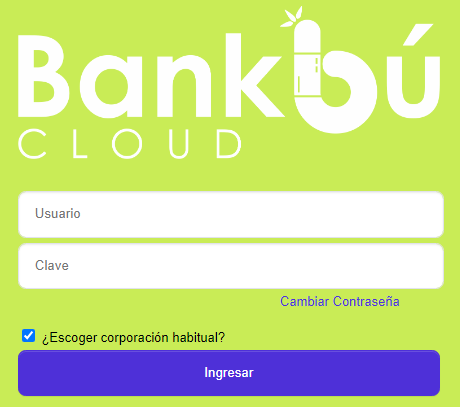 |
|
Una vez ingresada la dirección y localizada la página, se despliega un formulario inicial en el cual el sistema solicita el usuario y la contraseña solicitados, que el administrador de la instalación asigna a cada uno de los funcionarios de la entidad, quienes están asociados a un perfil que establece sus atribuciones sobre cada uno de los roles y opciones del sistema; una vez digitada la información solicitada, el usuario obtiene el acceso al aplicativo. Cuando el usuario normalmente accede a una base de datos específica y predeterminada se selecciona la casilla Escoger corporación habitual, aunque si lo requiere y está autorizado para ello, puede conectarse a otra Base de Datos diferente, digitando el nombre de usuario, la clave y el nombre de la base a la cual desea ingresar. |
|
Ventana principal del sistema. Después de que el sistema valida correctamente el usuario y claves ingresados, se abre la ventana principal del mismo, la cual contiene los menús y el área de trabajo dentro de la cual se despliegan todas las opciones y formularios como se indica a continuación. |
|
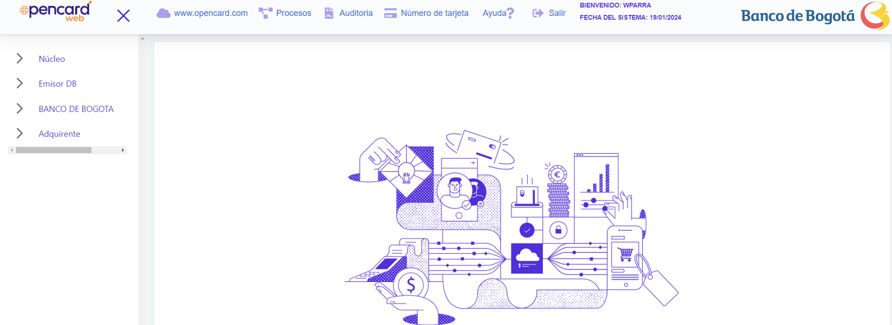 |
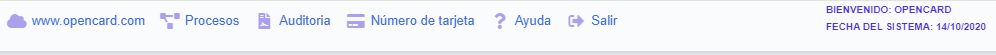
|
Salir |
Corresponde al último botón que se muestra en el área superior del formulario de entrada y permite al actor salir del aplicativo cerrando la sesión. |
|
Usuario |
En esta sección de la ventana principal se despliega el nombre del usuario con el cual se inició la sesión del aplicativo |
|
Fecha |
Muestra en formato yyyy-mm-dd la fecha actual de proceso del sistema. Este formato de fecha es el estandar del aplicativo |
|
Area de trabajo |
Esta es la parte central de la ventana principal del Sistema.Es un espacio virtualmente infinito para despliegue simultáneo de múltiples pantallas del sistema.En el evento en que la cantidad de pantallas abiertas supere la capacidad física de la pantalla del monitor, se despliegan barras de desplazamiento, vertical y horizontal. |
|
|
|
Navegación: Después que se está en la página principal del aplicativo, el usuario puede comenzar a navegar a través de las diferentes opciones. |
| Despliegue del menú |
Una vez que el usuario ha seleccionado un rol y se despliegan el menú correspondiente, al ubicarse sobre cualquiera de ellos y hacer clic en el ‘+’ se desplegará el menú que muestra todas las opciones contenidas y a las cuales puede ingresar el usuario. Cuando el menú se encuentra desplegado y no alcanza a visualizarse completamente en la pantalla, se habilita un scroll a la derecha del mismo con el fin de permitirle al usuario desplazarse a través del menú. |
|
|
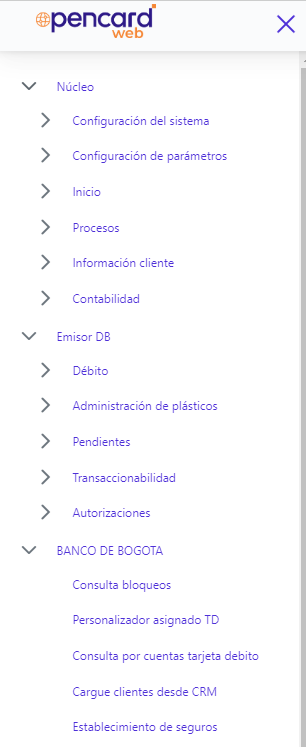 |
|
Ingresar a una opción |
El usuario puede ubicarse con el puntero del Mouse sobre cualquiera de las opciones desplegadas en el menú y con un clic izquierdo invocar el llamado del formulario correspondiente.
|
|
Si existen registros para mostrar en el formulario, estos se muestran en el mismo o en caso contrario el formulario se despliega con todos sus campos en blanco. Cuando el tamaño del formulario es largo o la cantidad de registros por página es mayor, se habilitan scrolls horizontales y verticales que le permiten al usuario desplazarse por la pantalla y ver el contenido completo del formulario. Los formulario se encuentran estructurados de la siguiente manera: título, opciones para actualizar, eliminar, adicionar y detalle según aplique, flechas de navegación entre páginas, cantidad de registros por bloque, total de registros y número de página en la cual se encuentra el usuario. |
|
|
Navegación entre páginas |
Estas flechas ubicadas antes del campo de registros le permiten al usuario avanzar o retroceder una página, ir a la última página o regresar a la primera página. Esta funcionalidad se complementa con la cantidad de registros que el usuario desea desplegar en cada página y que se ingresan en el recuadro del campo Bloque de registros y después de utilizar la tecla tabulador el sistema repagina nuevamente el formulario para mostrar la cantidad de registros seleccionados. Admite como máximo 100. A medida que el usuario se desplaza por entre los bloques de registros con esta opción, en la parte derecha del formulario se va actualizando el número de página actual. En este campo, el usuario también puede acceder directamente a cualquiera de las páginas ubicándose con el puntero del Mouse sobre la misma y dando clic. |
En algunos casos, los formularios cuentan con botones especiales que por lo general indican la ejecución de procesos específicos desde el formulario. Estos botones se ubican en la parte inferior del formulario.
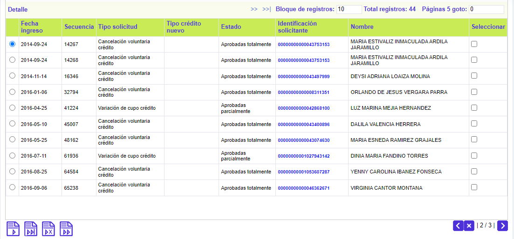
Desplazarse entre bloques de datos
Dependiendo de la cantidad de información que el formulario contenga, es posible que éste se encuentre dividido en bloques de datos para facilitarle al usuario su consulta o diligenciamiento. En estos casos, el formulario cuenta en la parte superior con un conjunto de hipervínculos que le permiten ir directamente a cada uno de los bloques, y en cada bloque, en la parte izquierda cuentan con una flecha que le permite al actor regresar al primer campo del formulario.
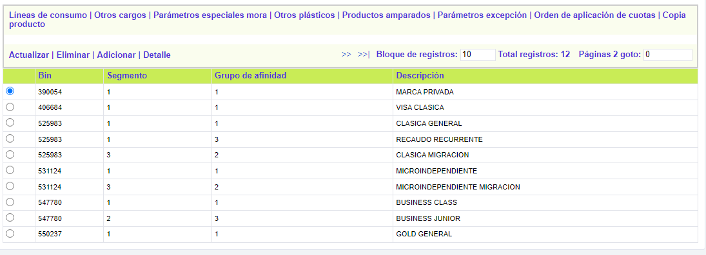
|
|
|
Filtros y listas de valores. Algunas de las opciones y todas las listas de valores cuentan con filtros que permiten buscar información específica requerida por el usuario. |
|
Filtros |
Al ingresar al formulario, en la parte superior el actor puede encontrar que existen campos en blanco acompañados de un botón “Buscar”. Estos corresponden a los filtros proporcionados por el sistema en algunos formularios para facilitar la visualización de datos específicos. Si al invocar una opción, lo único que se despliega en el formulario es el filtro, indica que se debe seleccionar primero los criterios de los registros que el usuario desea consultar para que sean traídos en el formulario. 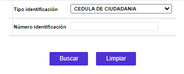 |
|
En otros casos, el formulario por defecto trae todos los registros que contenga y mediante el botón “Ir a filtro” habilita el filtro y le permite al usuario ser más específico en los registros a consultar . |
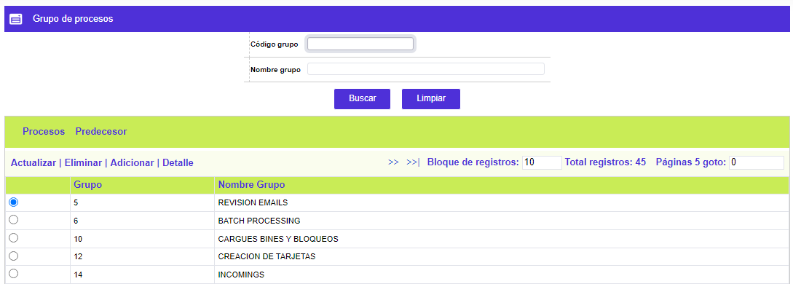
Listas de valores
Cuando en un formulario al lado de cualquiera de sus campos se muestra una lupa, indica que este campo contiene una lista de valores de la cual se pueden seleccionar los datos a ingresar en el mismo.
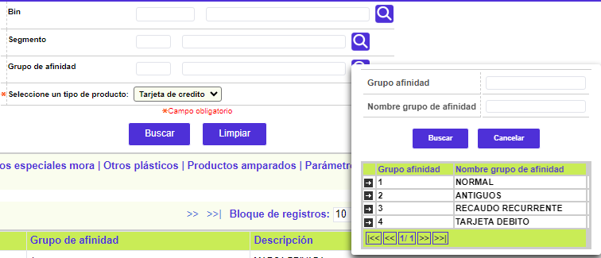
Estas listas cuentan con sus propios filtros que en el caso de los códigos buscan el valor exacto digitado por el usuario, y en el caso de las descripciones permiten búsquedas utilizando el símbolo '%' así: si se digita una palabra clave seguida de este símbolo, el sistema traerá en caso de existir los registros que comiencen por dicha palabra.
Si el símbolo se coloca al comienzo seguido de la palabra clave, el sistema buscará solo los registros que terminen en esa palabra.
Si la palabra clave se encierra en medio de estos dos símbolos, el sistema buscará todos los registros que coincidan sin importar la ubicación de la misma dentro del texto.
Es importante tener en cuenta que esta búsqueda diferencia entre mayúsculas y minúsculas al momento de efectuar la consulta.
Wizards: Para algunos de las opciones invocadas por el usuario (especialmente cuando se utiliza la funcionalidad “Adicionar”), el sistema despliega un tipo especial de formulario denominado wizard y que se compone de varios formularios que deben ser diligenciados en secuencia. Indican al usuario la cantidad de páginas o pasos totales que contiene y en cual paso se encuentra ubicado actualmente.
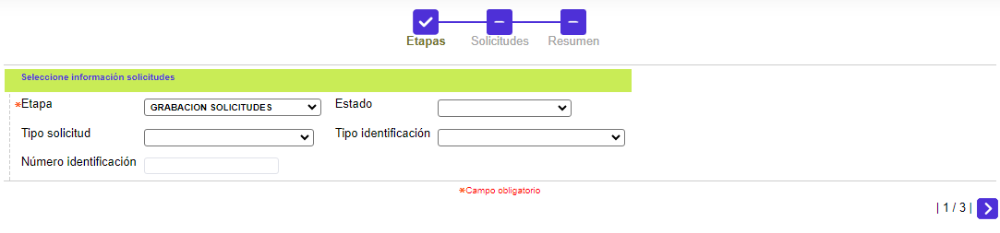
Estos wizard contienen sus propios botones de navegación que permiten retroceder a la página anterior, avanzar a la siguiente, cancelar la acción y salir del formulario o finalizar la acción y grabar el registro en la base de datos
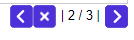
Carrito de compras: es un tipo especial de wizard en el cual el usuario va adicionando uno a uno los registros que quiere guardar en la base de datos y esta información va siendo almacenada temporalmente de manera similar a un carrito de compras y al final el actor tiene la opción de grabar todos los datos cargados, descartar algunos o adicionar nuevos.
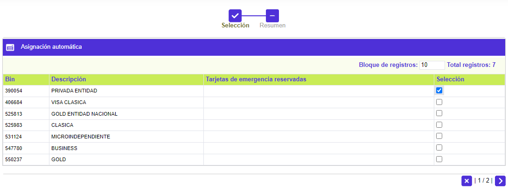
Al final del proceso el usuario elimina o adiciona registros y los guarda en la base de datos
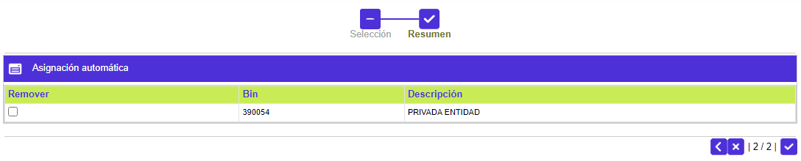
Adición, actualización y detalle de los registros
Cuando el usuario ingresa a un formulario desde el menú, por lo general encuentra las opciones Adicionar, Actualizar y Detalle. A continuación se explica de manera breve el modo de operación de cada una de ellas.
|
Adicionar |
Cuando el usuario invoca la funcionalidad - Adicionar- se despliega un formulario con todos sus campos en blanco que le permite ingresar y guardar en la base de datos nuevos registros. En el formulario se despliegan algunos campos marcados con un asterisco que le indican al usuario que su diligenciamiento es obligatorio para poder guardar el registro en la base. 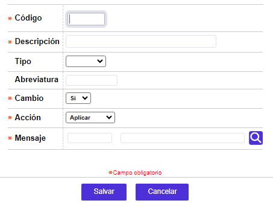 |
|
|
El formulario adicionar cuenta con dos botones Salvar (Guardar) y Cancelar que le permiten respectivamente crear el registro en la base de datos o salir sin efectuar ninguna acción. |
|
Actualizar |
Cuando el usuario selecciona un registro ya existente en la base y utiliza la funcionalidad -Actualizar-, se despliega un formulario que contiene los datos actuales del registro y le permite modificar algunos de ellos. Los campos modificables se muestran en fondo amarillo claro y se encuentran habilitados para que el usuario efectúe los cambios requeridos. |
|
|
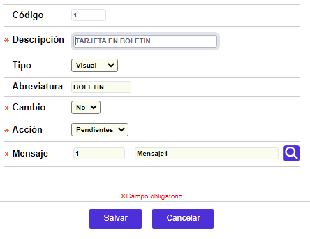 |
|
|
Al igual que la opción actualizar, contiene los botones Salvar y Cancelar que permiten guardar los cambios hechos o cancelar la acción y no modificar el registro. |
|
Detalle |
Cuando el formulario no puede mostrar la totalidad de los campos que contiene cada registro, se incluye la opción -Detalle- desde la cual el usuario invoca un formulario que le muestra la información completa del registro seleccionado. Este formulario es solo de consulta y no permite modificar ningún dato. |
|
|
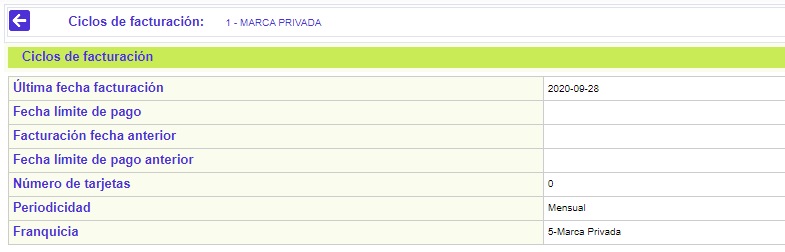 |
|
|
A diferencia del adicionar y actualizar, este formulario no contiene botones y la manera de salir es haciendo clic sobre la flecha ubicada en el borde superior izquierdo. |
Mensajes e indicaciones del sistema. El Sistema intercambia información con el usuario mediante mensajes que se despliegan de diferente manera. Existen varios tipos de mensajes que pueden ser informativos, de advertencia, de notificación, de error como se explica a continuación
Mensajes Informativos
Informan sobre procedimientos errados o acciones inconclusas o no permitidas entre otros, y generalmente se muestran dentro del mismo formulario debajo o al lado de los campos en los cuales se presentan inconsistencias al momento de hacer validaciones para guardar el registro

Mensajes de Advertencia
Requieren que el usuario decida frente a un proceso o acción inconclusa, o ante la ejecución de acciones que tienen consecuencias irreversibles, presentándole generalmente las opciones de respuesta aceptar o cancelar.
Mensajes de Notificación
Indican al usuario la culminación de un proceso y usualmente solo le muestran la opción ' Aceptar' por ser el final de un proceso.
Mensajes de Error
Estos mensajes normalmente se presentan durante la adición o actualización de un registro o en la ejecución de algún proceso y muestran al usuario un triángulo rojo en la parte superior derecha el formulario, en el cual al ubicarse con el mouse y dar clic izquierdo despliegan una nueva ventana del browser en donde se muetra el formulario que contiene la información del error.
Su presentación es similar a los mensajes de advertencia salvo que, solo brindan la opción de 'Aceptar' muestra el texto descriptivo del error y por lo general el código del error generado.
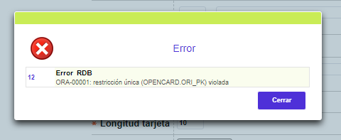
Cuando se ejecuta algún proceso desde el formulario por lo general mediante el uso de alguno de los botones especiales (ej. aplicar un registro pendiente o avanzar de etapa una solicitud) el sistema despliega en el formulario un indicador que le muestra al usuario que se está ejecutando el proceso.
Algo similar a lo anterior ocurre cuando desde una lista de valores el usuario utiliza alguno de los filtros contenidos en ella para efectuar una búsqueda específica. Dentro del formulario se muestra un indicador (ver recuadro rojo) que le señala al usuario que el aplicativo se encuentra ejectuando la consulta en la base para mostrarle los datos solicitados.
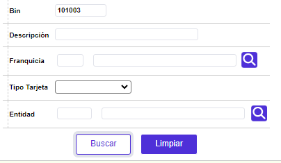